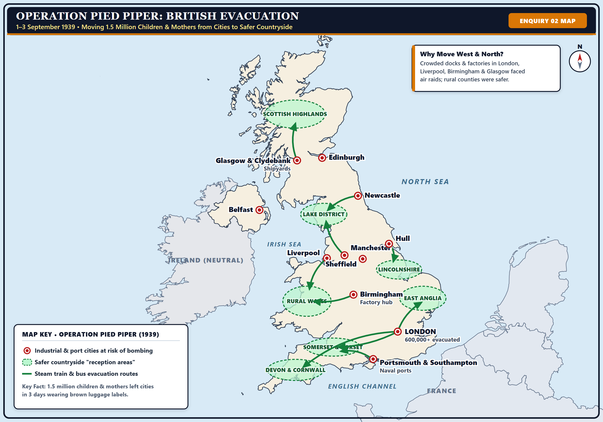

✂ Cut along dashed line to stick neatly into exercise book
Operation Pied Piper & British Evacuation
Enquiry Question: What was it like for 1.5 million British children to be sent away from home with a brown paper luggage label?
LESSON 02
OF 11 • KS2

Source A (Photograph): Schoolchildren walking to a railway station in September 1939 wearing brown luggage labels and gas mask boxes.
On Friday 1 September 1939—two days before war was officially declared—Britain launched Operation Pied Piper. Across three days, 1.5 million schoolchildren, teachers, and mothers with toddlers under five left crowded industrial cities such as London, Manchester, Liverpool, and Glasgow.
School-age children travelled in class groups without their parents to safer countryside reception areas like Devon, Cornwall, and Wales, where Billeting Officers placed them with local host families.

Source B (Map): City danger zones (ports and factories) and safer countryside reception areas in 1939.
1. Why did every evacuee wear a brown paper luggage label tied to their coat, and who helped guide school lines safely onto the trains?
2. Looking at Source B, why did trains take London children west to Devon, Cornwall, and Wales rather than south-east to Kent?
STEP 1 • 1 SEPT 1939
Goodbye at the Station
1.5 million children wave goodbye to parents at city barriers and board steam trains with teachers.
Why did school-age children travel with teachers rather than parents?
STEP 2 • TRAIN JOURNEY
Heading to Reception Areas
Long steam train ride eating packed sandwiches; signs hidden and destinations often kept quiet.
What sights out of the carriage window surprised city children?
STEP 3 • VILLAGE HALL
Billeting Officer Placement
Children gather in village halls where Billeting Officers match them with local host homes.
Why were evacuee experiences so varied from home to home?
✂ Cut along dashed line to stick neatly into exercise book
OPERATION PIED PIPER TAG
CHILD: _______________________
CITY SCHOOL: _________________
RECEPTION AREA: Devon / Wales
Fill in an authentic September 1939 luggage tag above
1. Gas Mask in Cardboard Box (Compulsory)
Why did evacuees still carry gas masks even in quiet country villages?
2. Warm Woollen Jumper, Nightclothes & Boots
Why did government lists insist on warm clothes and sturdy boots?
3. Toothbrush, Comb, Towel & Soap
Why did each child pack their own wash kit for their host family?
4. Sandwiches, Apple & Stamped Postcard Home
Why was a pre-addressed postcard so important on arrival?
1
City Evacuee Waiting in the Village Hall
How do you feel waving goodbye at the railway station, seeing green fields and cows, and waiting to meet your host family?
2
Countryside Host Mother Welcoming Evacuees
What preparations are you making in your cottage to keep tired, homesick city children safe and fed?
Starter: "Dear Mum and Dad, I arrived safely in the countryside after a long steam train ride with my school class..." • Word Bank: steam train • luggage label • Billeting Officer • host family
✂ Cut along dashed line to stick neatly into exercise book
THE BRITISH EVACUEE SUITCASE • OPERATION PIED PIPER (SEPT 1939)
Draw, colour, and label the essential belongings packed by a British child leaving the city in September 1939.
LESSON 02
OPTIONAL CRAFT
Sept 1939 Government Packing Checklist (Tick as you draw):
Gas mask in cardboard box
Warm woollen jumper & coat
Change of underwear & nightclothes
Toothbrush, soap, towel & comb
Strong walking boots / plimsolls
Packet of sandwiches & an apple
Family photograph & postcard home
Remember: Food rationing did not start until January 1940, so September 1939 evacuees did NOT carry a ration book yet!
L.C.C. EVACUATION LABEL • SEPT 1939
LONDON → COUNTRYSIDE RECEPTION AREA
DRAW, COLOUR & LABEL YOUR PACKED BELONGINGS INSIDE THIS SUITCASE
My Most Precious Item & Why I Chose It: